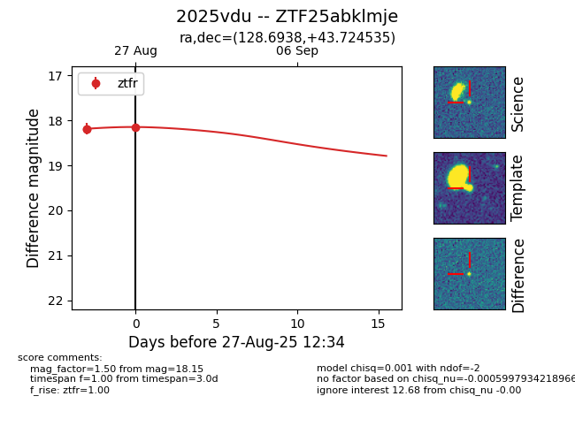

Target 2025vdu at 2025-08-27 12:34, see:
FINK: fink-portal.org/ZTF25abklmje
Lasair: lasair-ztf.lsst.ac.uk/objects/ZTF25abklmje
ALeRCE: alerce.online/object/ZTF25abklmje
TNS: wis-tns.org/object/2025vdu
YSE: ziggy.ucolick.org/yse/transient_detail/2025vdu
alt names
ZTF25abklmje (ztf,fink)
2025vdu (tns,yse)
coordinates:
equatorial (ra, dec) = (128.6938,+43.72454)
galactic (l, b) = (176.9909,+36.54445)
photometry
last ztfr=18.15
3 ztfr detections
